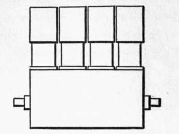
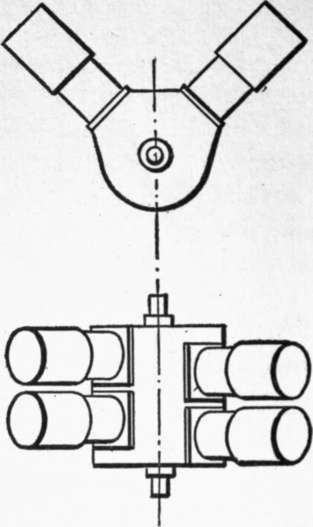
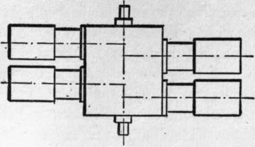
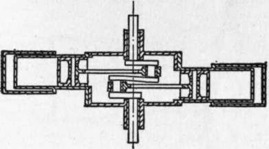

Aeroplane Motors. Part 2
Description
This section is from the book "The New Art Of Flying", by Waldemar Kaempffert. Also available from Amazon: The New Art of Flying.
Aeroplane Motors. Part 2
Fig. 37. Gyrostat mounted in an aeroplane according to the system of A. J. Roberts. The gyrostat is controlled by a pendulum which swings to the right or to the left, according to the tilt of the aeroplane.
Photograph by Edwin Levick.
There are various ways of securing lightness in a motor. One way is to increase the power developed by cylinders of a certain size. Another is to reduce the weight for a given cylinder capacity by the use of thin steel cylinders and by constructing the parts as lightly as possible. A third way is to arrange the cylinders in such a manner that more than one connecting-rod is assigned to each crank with a consequent reduction in the weight of the crank-case, A fourth way is to cool the cylinders with air instead of water.
Many motor builders have abandoned the fly-wheel because it is the heaviest part of the engine. In order that the motor may run steadily without a fly-wheel and may be properly balanced, it has been necessary to rearrange the cylinders and to increase their number. The whole subject was recently considered by an anonymous writer in Engineering (London). The following lucid paragraphs on the arrangement of cylinders in present aeroplane motors present his views:
Fig. 53. The usual arrangement of the four cylinders of a four-cylinder engine.
" The weight of an engine consists principally of the cylinders and pistons on the one hand, and the crank, crank shaft, etc., on the other. Roughly speaking, the weight of the cylinders will be proportionate to the cube of the dimensions. That is to say, if the cylinders are arranged vertically in a row, for instance, the weight of the crank case, shaft, etc., will be practically proportionate to the cylinder capacity. If we can mount the cylinders in such a manner that we can get a great cylinder capacity with a very short crank case, we shall, however, save weight. If, for instance, we start with the vertical four-cylinder engine of the ordinary type, as shown in Fig. 53, the crank case has necessarily to be as long as the length over the cylinders. In this and the following figures the valves are omitted for the sake of clearness, and in all the figures the cylinders are the same size, so that the size of crank case necessary for a given cylinder capacity can easily be seen.
" Two common plans for reducing the length and weight of the crank case are to place the cylinders either diagonally, as in Figs. 54 and 55, or horizontally opposed, as in Fig. 56. In either of these arrangements the length of the crank case, etc., is almost halved, and a considerable saving of weight is effected. Any of these arrangements can be made with two, four, six, eight, or more cylinders. In the case of the diagonal engine the impulses are not evenly divided with two or four cylinders, though they can be so with six, if the angle between the cylinders be made one hundred and twenty degrees. With eight cylinders at ninety degrees the impulses are evenly divided, and this is the most usual number. In this type each diagonal pair of cylinders is connected with one crank. The diagonal engine, with the cranks at ninety degrees, can be balanced for all practical purposes, even where there are only two cylinders, by placing a balance weight opposite the crank equal to the weight of the whole rotating parts and the reciprocating parts of one cylinder. With four cylinders the cranks are usually placed opposite, but balance weights are still necessary to avoid a rocking moment. With eight cylinders the cranks are set so that the two end ones are opposite the two middle ones, and no balance weights are required.
Figs. 54 and 55. Side and plan views of a four-cylinder engine with diagonally-placed cylinders.
" In the case of the opposed horizontal engine the two connecting rods work on opposed cranks, as in Fig. 57. In this case the engine, even the two-cylinder, is in many ways better balanced than the vertical or diagonal types, as the error in balancing, due to the angle of the connecting rods, is allowed for. If only two cylinders are used, there is, however, a very small rocking moment, due to the fact that the cylinders are not actually opposite each other; but this is usually a negligible quantity. . . . With four cylinders the rocking moment is balanced. The impulses in the horizontal opposed engine are always evenly divided, whether two, four, or eight cylinders are used.
Fig. 56.
Fig. 57.
Figs. 56 and 57. Engine with horizontally opposed cylinders.
" Comparing the horizontal opposed with the diagonal engine, the former appears to have all the advantages, as the impulses are more even with a small number of cylinders, and the balance better. The latter point will enable somewhat shorter connecting rods to be used without excessive vibration, thus lightening the engine. . . .
" While the crank case, etc., is distinctly lightened by these arrangements, it can be still more reduced if the cylinders are all arranged radially on to one crank. This has been done in. a great many different ways by different makers. For comparison, with the previously-mentioned four-cylinder engines, a four-cylinder radial engine is shown in Figs. 58 and 59, the cylinders being the same size as before. It will be seen that in this case the crank case and shaft are very much shorter and lighter than in any of the previous arrangements. In practice four is not a good number of cylinders, as the impulses cannot be evenly divided, and an odd number of cylinders must be used to effect this. This type of engine can be satisfactorily balanced as long as the cylinders are evenly spaced round the crank case, for all the pistons are attached to one crank pin, and therefore form one revolving weight, which can be balanced by a suitable balance weight.
Continue to: